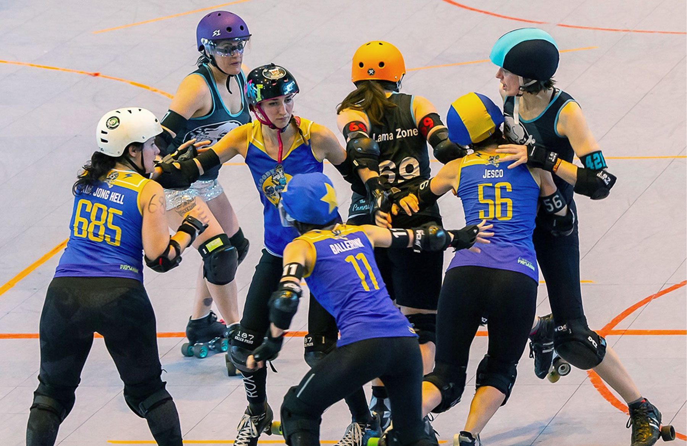
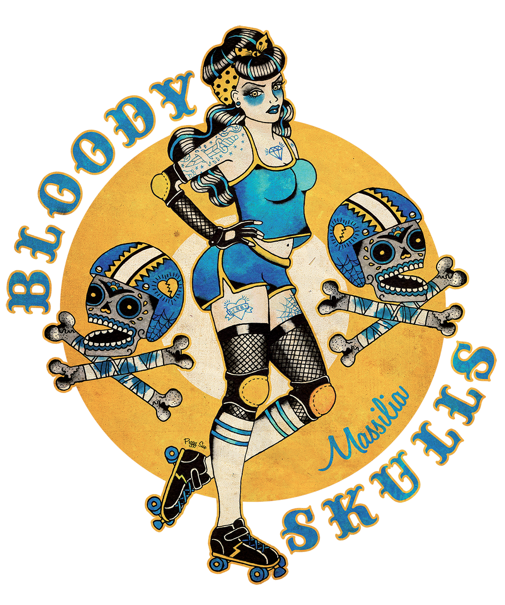

Bloody skulls
La première équipe crée en 2011. Elle integre le Championnat de France en 2015 lors de sa création. Alors classée 13ème équipe Française, elle intègre la Nationale 1 au côté des All Blocks (Mérignac), le DCCLM (Montpellier) et la Horder (Orcet). Encore présente en championnat, elle joue aussi des matchs internationnaux pour se challenger chaque année.
Tous les résultats des Bloody Skulls >